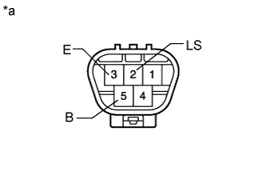
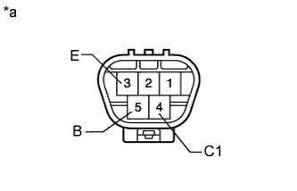

REAR WIPER MOTOR > INSPECTION |
| 1. INSPECT REAR WIPER MOTOR ASSEMBLY |
|  |
Check the wiper continuous operation.
Check that the rear wiper motor assembly operates when the battery voltage is applied between the terminals.
| Tester Connection | Specified Condition |
| Battery positive (+) → Terminal 5 (B) Battery negative (-) → Terminal 2 (LS) Battery negative (-) → Terminal 3 (E) | Motor operates at low speed (LO) |
| *a | Component without harness connected (Rear Wiper Motor Assembly) |
|  |
Check the wiper intermittent operation.
Check that the rear wiper motor assembly operates when the battery voltage is applied between the terminals.
| Tester Connection | Specified Condition |
| Battery positive (+) → Terminal 5 (B) Battery negative (-) → Terminal 4 (C1) Battery negative (-) → Terminal 3 (E) | Rear wiper motor operates intermittently |
| *a | Component without harness connected (Rear Wiper Motor Assembly) |